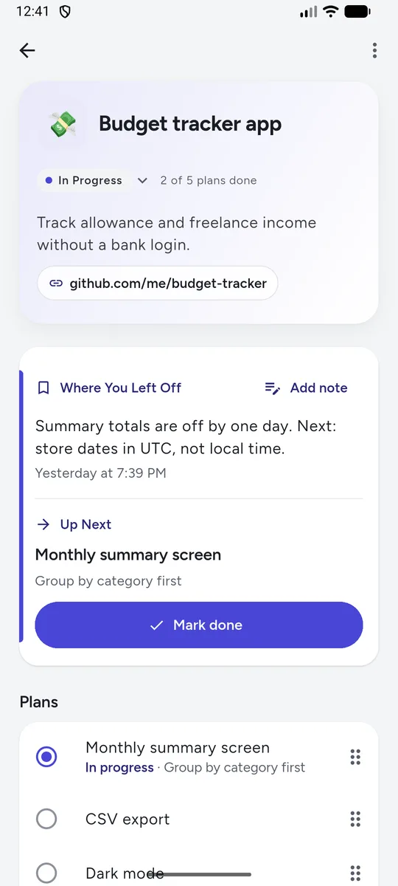

How to restart a paused project
Start by finding the last thing that worked. Then pick one small task you can do in your first session back. Even if you only have time to find your files and update your notes, you’ll have a clear place to begin next time.
Find the last usable version
Open the most recent draft, build, or photo of your work. Try one thing you remember finishing. If it still works, write it down. If it’s broken, record what you tried and what happened. For a budget tracker, you might confirm that adding an expense works but notice that the weekly total stays at zero.
If you don’t know which file or branch you were using, use the first session to find it. Save its name in the project note so you won’t have to search again.
Pick a task that fits the time you have
Work from what you can see now. With 20 minutes, enter two expenses and check whether the total matches. If you discover the problem is bigger than the session, record the exact check you’d run next and stop there.
Leave a note before you stop
Say where you stopped, what still works, and what to do next. Include the file or screen name if it will help you find your place.
Where I stopped
On the Weekly Summary screen.
What I checked
Two expenses saved correctly. The weekly total stayed at zero.
What to try next
Check whether the summary includes expenses dated today.
In WipNest, the Where You Left Off note sits next to your Up Next step. Put the context in the note and the action in Up Next so you can find both when you return.
Decide whether to keep it active
If you still want the result and can name the next task, keep it on your active list. If you’re waiting for a part, a decision, or more time, write down what would let you resume and set it aside.
